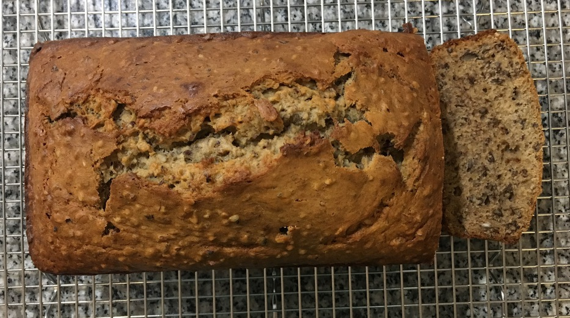

| Other | Meat | Veggie | Fruit |
|---|---|---|---|
| baking powder | eggs | banana | |
| baking soda | |||
| butter | |||
| cinnamon | |||
| flour | |||
| pecans | |||
| salt | |||
| sugar | |||
| vanilla | |||
| yogurt |
| instructions |
|---|
| Preheat oven to 350F |
| Butter bread pan |
| Mix 2 c flour, 1 tsp baking soda, 1 tsp baking powder, 0.5 tsp salt, 2 tsp cinnamon |
| Mix 3 mashed overripe bananas, 0.75 c sugar, 2 eggs, 5 tbsp melted butter, 0.33 c yogurt, 1 tsp vanilla |
| Combine and stir until just incorporated ~10 sec |
| Bake bread for 60 min or internal temperature is 206F |